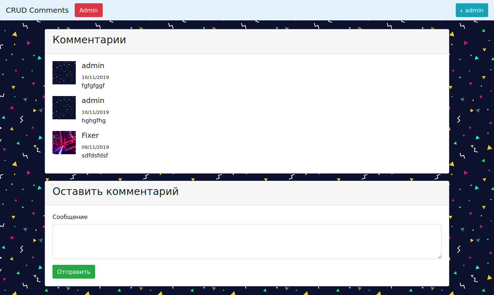
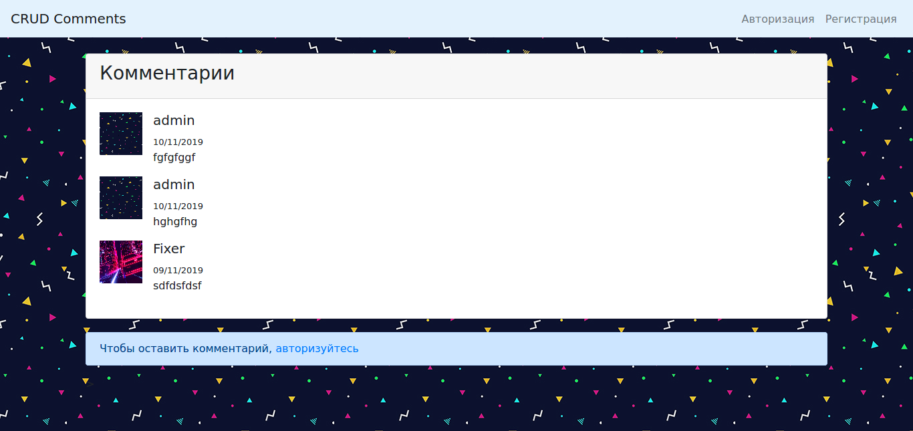
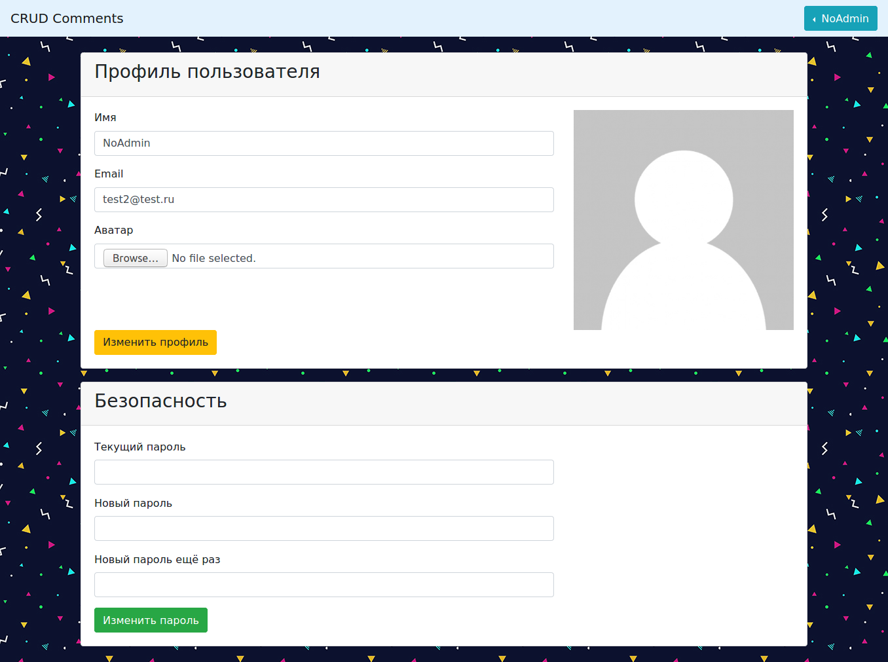
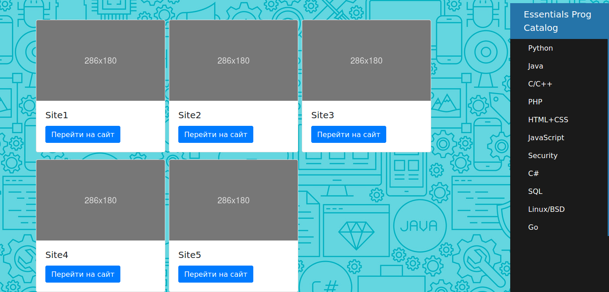

Это приложение, в котором зарегистрированные пользователи могут оставить комментарий. Комментарии сортируются, а форма отправки сообщений имеет валидацию.

Анонимные пользователи не имеют доступ к форме отправки.

Пользователи могут редактировать свой профиль: email, логин, аватарку, пароль.

Администрация имеет модерирующую страницу, где можно блокировать сообщения.
Данное приложение представляет из себя каталог сайтов определённой тематики, имеющих категории. На главной странице отображаются все сайты, в перспективе, отсортированные по количеству переходов.

В конкретной категории отображаются сайты, относящиеся к этой категории, соответственно.